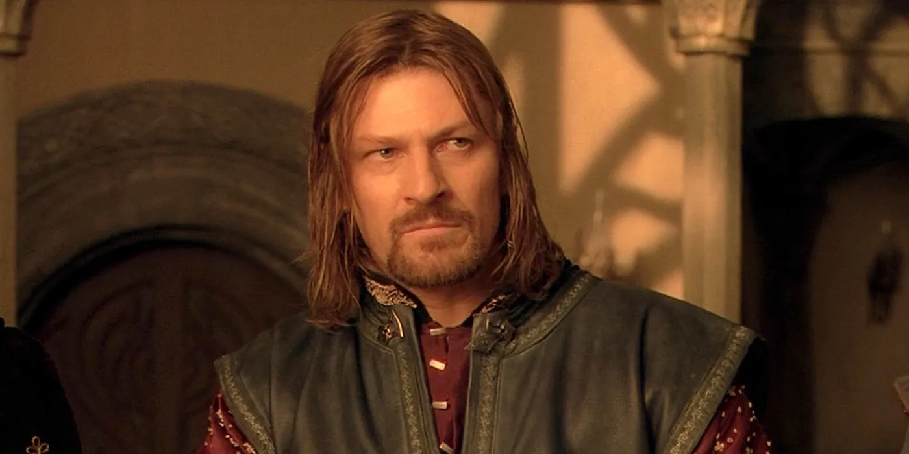

Бо́ромир (синд. Boromir) — старший сын и наследник правящего наместника Гондора Дэнетора II и его жены Финдуилас из Дол Амрота, брат Фарамира, один из девяти членов Братства Кольца.
Боромир на совете Эльронда, 3019 год Т.Э.
Характеристика
Толкин описывает внешность Боромира как отражение его нуменорского происхождения: высокий (193 см), темноволосый и сероглазый. Боромир походил на отца лицом и гордостью, но мало чем ещё. Он скорее напоминал короля Эарнура: не желал жениться и находил удовольствие в упражнениях с оружием. Боромир отличался бесстрашием и силой. Он не интересовался сказаниями древних дней, за исключением тех, что повествовали о битвах.
Критика
Ральф Вуд сопоставляет персонажей Боромира и Сарумана: «Они оба воспринимают себя в качестве лидеров и героев», однако поддаются собственному честолюбию. Однако, в отличие от Сарумана, Боромиру Кольцо нужно в качестве оружия против Саурона, Саруман же рассматривает возможность сотрудничества с ним. Мужества Боромира было недостаточно, чтобы сохранить себя от зла, так как оно не сочеталось с мудростью. Его высокомерная вера в то, что он сможет бороться с Сауроном с помощью Кольца, является главной причиной его падения.
Кристина Брук-Роуз определяет Боромира как персонажа, который выполняет главным образом структурную роль в романе – он является причиной распада Братства Кольца, что позволяет Фродо и Сэму предложить поход в Мордор самостоятельно.
Боромир – любимый персонаж Джорджа Мартина, поскольку он один из немногих, кому пришлось бороться с силой Кольца. Он поддается ей и героически умирает.
Битва против Урук-Хай у Амон Хэн, 26 февраля 3019 год Т.Э.
Цитаты